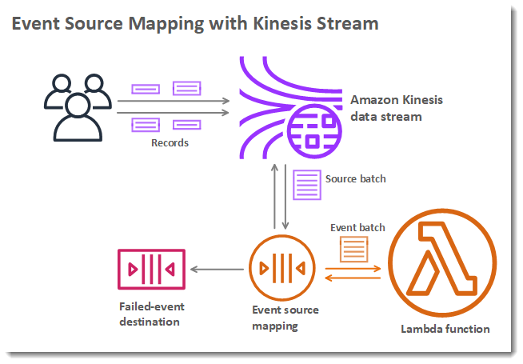
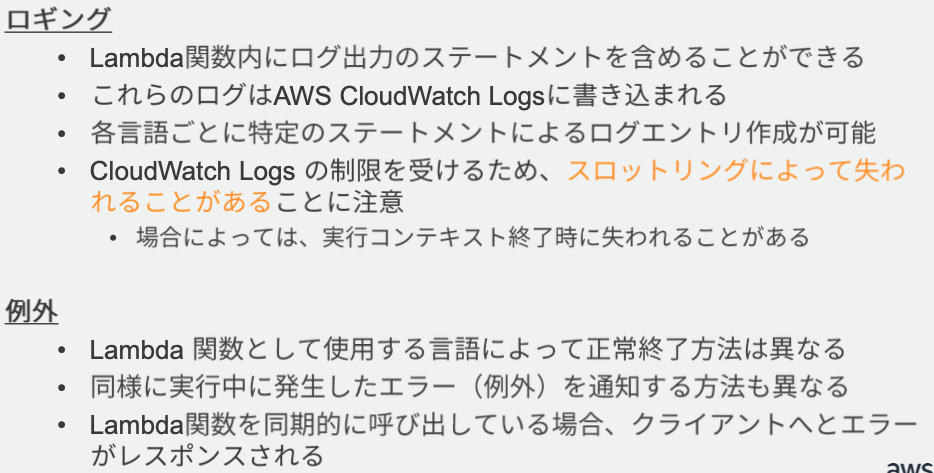
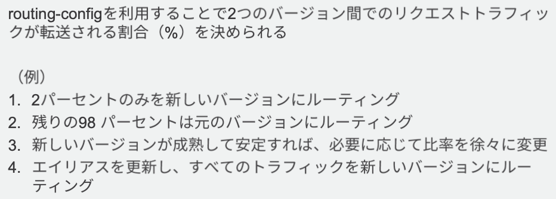
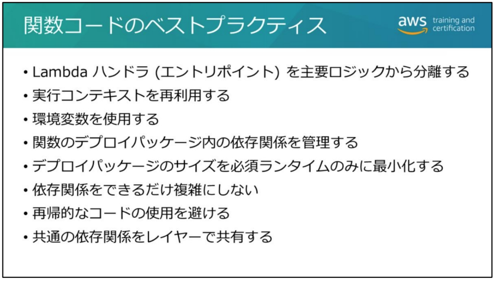
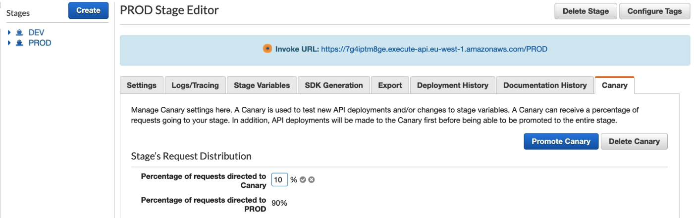
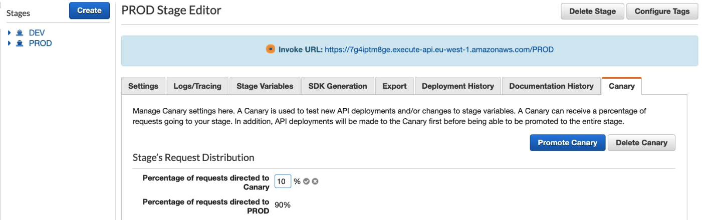

AWS Lambda
関数
-
ZIP 形式でパッケージング。
- Java はスタンドアロン .jar、.Net はスタンドアロン .dll でのデプロイも可能。
-
S3 に保存され実行時以外は暗号化される。
- 関数はそれぞれ個別のコンテナで隔離されて実行される。
ランタイム
- https://docs.aws.amazon.com/ja_jp/lambda/latest/dg/lambda-runtimes.html
- Python 2.7, 3.6, 3.7, 3.8
- Node.js 10.x, 12.x
- Ruby 2.5, 2.7
- Java 8, 11
- .NET Core 2,1, 3.1 (C#/PowerShell 6.0)
- Go 1.x
- ランタイムはバージョンに応じて Amazon Linux, Amazon Linux 2 で実行される。
- カスタムランタイム: サポートされていない言語のランタイムをセットアップ
- https://docs.aws.amazon.com/ja_jp/lambda/latest/dg/runtimes-custom.html
- 関数のランタイム設定で provided を選択。
- bootstrap という名前の実行可能ファイルを ZIP に含める。
基本設定
-
メモリ
- デフォルトの 128 MB から 約 3 GB (3,008 MB) の範囲で設定 (64 MB 単位) 。
-
メモリ量に比例して CPU 容量が割り当てられる。
- 例: 1,792 MB で 1 つのフル vCPU に相当。
- メモリ量が一定を超えるとコア数も増えるためマルチコア対応でコードを実装するとパフォーマンスが上がる。
- タイムアウト
- デフォルト 3 秒。最大 15 分 (900 秒)
-
実行ロール
- 関数が AWS リソースにアクセスする際の IAM ロール。
他の主な設定項目
- 環境変数
- VPC アクセス
- 同時実行数の予約
- 非同期呼び出しのエラー処理動作の設定
- 再試行数・未処理イベントがキューに残る時間を減らす。
- DeadLetterConfig の設定。
制限
- インバウンド接続: ブロック
-
アウトバウンド接続
- TCP, UDP ソケットのみ
- TCP 25 番ポート (SMTP) はブロック (OP25B)
-
ptrace システムコールはブロック
-
呼び出しペイロードサイズ (リクエスト/レスポンス)
- 6 MB (同期)
- 256 KB (非同期)
-
同時実行数 (上限緩和申請可能)
- 1000
- 同一アカウントでリージョンごと。
-
デプロイパッケージサイズ (Layer 含む)
- 256 MB
- 上限緩和不可なので、超える場合は依存関係を動的に /tmp にダウンロードして参照。
-
/tmp
- 512 MB
- EFS も使えるようになった
従量課金
- リクエスト数
- 割り当てメモリ x 実行時間 (100ms単位)
トリガーとユースケース
-
API Gateway
- サーバレス API
-
ALB
- API Gateway 使わなくても HTTP インターフェース付与できる
-
CloudWatch Events
- 任意のイベントの処理
- スケジュール処理
-
CloudWatch Logs
- ログの分析
-
CodeCommit
- コードの検証。クリデンシャルが入ってないかとか。
-
DynamoDB
- DynamoDB ストリーム。
-
Kinesis
- リアルタイム分析。
-
S3
- S3 イベント。
-
SNS/SQS
- ファンアウト。
呼び出しタイプ
-
同期
- InvocationType = RequestResponse
- 関数が返したデータがレスポンスで返る。
- ポーリングベースは同期。処理成功したレコードを削除するため。
-
非同期 (イベント)
- InvocationType = Event
- レスポンスはリクエストが正常に受け付けられたかのみ。２回の自動リトライがある。
- InvocationType = DryRun … 関数を実行せず必要な権限があるか確認する
プッシュ (同期)とイベント (非同期) はイベントソース側が Lambda をトリガー
- イベントは Lambda のからのレスポンスデータを必要としないため非同期。
- Lambda のリソースベースのポリシーで呼び出し側が Lambda を呼べるよう許可する (呼び出し権限)
ストリームベース (Pull モデル)
- 内部的な Lambda 関数が自動にできてポーリング。
-
ストリームベース
- DynamoDB Streams, Kinesis Data Streams
-
非ストリーム: SQS
- SQS は成功時のキューのメッセージ削除も自動でやってくれる
-
Lambda 実行ロールにイベントソースを読み込む権限が必要

イベントソースマッピング
- Pull モデルのイベントソースで使用。
- 対象のキュー/ストリームと関数を指定して CreateEventSourceMapping API で作成。
- イベントソースマッピングがバッチでソースからデータを取って関数に渡す。
- 
- Ref. https://docs.aws.amazon.com/ja_jp/lambda/latest/dg/invocation-eventsourcemapping.html
- 結果整合性=少なくとも1回呼ばれる

- Lambda 関数のリソースベースのアクセスポリシーを更新する AddPermission API がある。
IAM 実行ロールの例

- 信頼ポリシーで Lambda サービスへロールへの AssumeRole を許可。
- アクセスポリシーで関数が他の AWS サービスにアクセスするのに必要なポリシーを指定。
リトライの挙動
-
ポーリングベース: ストリームベース (DynamoDB Streams, Kinesis Data Streams)
- データレコードの有効期限が切れるまでリトライを行う。
- 失敗したレコードの有効期限が切れるか成功するまでシャードから新しいレコードを読み込まない。
-
ポーリングベース: 非ストリームベース (SQS)
- バッチのメッセージが全てキューに残り、VisibilityTimeout が過ぎればまた処理される。
- 新しいメッセージがあれば次回バッチに入ってきて処理される？FIFOキューだとバッチ数を超えたらずっと処理されない？
-
非ポーリングベース: 同期
- エラー発生時にはレスポンスヘッダに X-Amz-Funciton-Error が含まれる。
- イベントソースが AWS サービスの場合、リトライは呼び出し側サービスで設定。
- https://docs.aws.amazon.com/ja_jp/lambda/latest/dg/API_Invoke.html#API_Invoke_Errors
- https://docs.aws.amazon.com/ja_jp/lambda/latest/dg/API_Invoke.html#API_Invoke_ResponseSyntax
-
非ポーリングベース: 非同期 (イベント)
- 自動的に２回リトライ (全３回コール)。インターバル: 1回目のリトライまで 1分間、2回目まで 2分間。
- DeadLetterConfig: エラーで処理されなかったイベントを ARN で指定された SQS キュー/SNS トピックに送信。
同時実行数
-
最大 1000
- 実績に応じて上限緩和申請可能
- 超過した場合はスロットリングエラー (429 Too Many Requests) が返る。
- 非同期呼び出しの場合 15~30 分程度はバーストが許容される。
- ConcurrentExecutions / UnreservedConcurrentExecutions のメトリクスで確認できる。
- 1 つのイベントに対して複数回の呼び出し、または呼び出しが発生しないことはあり得る。
-
予約同時実行数: Reserved concurrency
-
全体の同時実行数から特定の関数に予約する。
- その関数に予約された分は他の関数に使用されない。
- その関数は予約された以上には同時実行されない。
- 全てを予約することはできず、100 個は残しておく必要がある。
-
-
プロビジョニング済み同時実行数: Provisioned concurrency
- スケールアップ時のレイテンシーを下げるためあらかじめコンテナがプロビジョンされる。
- AWS Auto Scaling でプロビジョニングされた同時実行数をスケーリングすることもできる。
- Ref. https://docs.aws.amazon.com/ja_jp/lambda/latest/dg/configuration-concurrency.html
- Ref. https://docs.aws.amazon.com/autoscaling/application/userguide/what-is-application-auto-scaling.html
-
参考: リージョンごとの同時実行数制限
- 3000 – 米国西部 (オレゴン)、米国東部（バージニア北部）、欧州 (アイルランド)
- 1000 – アジアパシフィック (東京)、欧州 (フランクフルト)
- 500 – その他のリージョン
VPC lambda
- 関数から VPC 内のリソースにインターネットを経由せずにアクセスさせたい場合。
-
関数に VPC サブネット(複数可) とセキュリティグループ(1つ)を設定する。
- AZ ごとにサブネットを指定してそれらを関数に設定することでマルチ AZ で可用性確保できる。
-
ENI により実現される
- サブネットごとに指定したセキュリティグループが設定された ENI が作成される。
- AWS Hyperplane を利用したクロスアカウントの VPC 間 NAT でカスタマー VPC 内の ENI に接続される。

- 実行ロールに AWSLambdaVPCAccessExecutionRole という管理ポリシーが必要。
- Ref. Lambda 関数が VPC 環境で改善されます
-
VPC を設定したタイミングから関数からのインターネットアクセスは不可
-
パブリック IP は割り当てられない (=IGW でパブリック IP への NAT が登録されない)
- ENI にサブネットのプライベート IP が DHCP で割り当てられる。
-
インターネットアクセスするにはパブリックサブネットに NAT GW を置いてやる必要がある。
-
-
ENI 作成
- VPC 利用する場合だけ。1 分ほどかかることがある。
-
コンテナ作成
- Amazon Linux のコンテナが作成される。
-
デプロイパッケージのロード・展開
- S3 からデプロイパッケージがコンテナにダウンロードされファイルシステムに展開される。
-
コールドスタート
- 1〜6 全てが実行される。(AWS Hyperplane が利用されるようになってからは ENI 作成は毎回でないかも)
- 1つもコンテナがない初期状態、利用可能コンテナ数以上の同時実行、コード/設定の変更時に発生。
-
ウォームスタート
- 作成したコンテナを再利用。
-
/tmp の再利用
- 前の呼び出しで /tmp に保存したファイルは残るので、注意しないと次の呼び出しで意図しない動作になる。
- 512MB はコンテナの制限。以前のファイルが残ったまま新規に作ると容量オーバーしてしまうことも。
-
バックグラウンドプロセス
- 関数終了時にバックグラウンドプロセスがある場合、そのプロセスは freeze させる。
- 次回の関数呼び出しで再開されるため、プロセス再作成のオーバーヘッドを減らせる。
- ただし、コンテナが再利用される場合だけなので保証はされない。
プログラミングモデル

- ロググループ内に複数のログストリームができる。
- ログストリームはランタイム(実行コンテキスト) ごとにできる。
- コンテキストには logStreamName や RequestIID、タイムアウトの情報が含まれる。
環境変数
- すべての環境変数の合計サイズ(キーと値を合わせて)は 4KB まで。
- DB のキー等の受け渡しは Secrets Manager 推奨。
環境変数の暗号化
-
保管時はデフォルトで AWS managed CMK で暗号化され、関数が呼び出されると復号される
- Customer managed CMK も利用可能。
-
伝送中の暗号化のためのヘルパー
- 管理コンソールで登録時にブラウザ側 KMS Encrypt で環境変数を暗号化。(「暗号化」ボタンをクリック)
- 復号用のサンプルコードが表示されるので Lambda 関数でそのコードで復号する。
- 「伝送中に暗号化する AWS KMS キー」で Customer managed key を指定する必要がある。
- 実行ロールで KMS Decrypt 権限も必要。

バージョン
-
関数の公開時に「バージョン」を発行する。
- コンソールで Publish new version を実行。
- PublishVersion API で明示的に発行。
-
バージョンが発行されるまでは $LATEST のみ。
- バージョンはイミュータブル。$LATEST でコード・設定を変更して新たなバージョンを発行。
- バージョンは一意の ARN を持つ
- arn:aws:lambda:us-west-2:123458298765:function:TestFunc:3
エイリアス
- エイリアスが別バージョンを指すよう更新されるとトラフィック転送先も更新後バージョンにすぐ切り替わる。
-
エイリアスにも一意の ARN がつく。
- arn:aws:lambda:us-west-2:123458298765:function:TestFunc:Prod
-
旧バージョンへのロールバックにも使える。
加重エイリアス
- ２つのバージョンに比率指定で紐づけられる (Blue/Green)

- routing-config パラメータでバージョンの比率を指定
- 
Lambda Layers
- ライブラリ的な ZIP ファイル。カスタムランタイムの本体も Layer に含められる。
- １つの関数から使用できる Layers は 5 つまで。
- 関数と全 Layers の合計サイズは、デプロイパッケージの解凍後サイズ制限の 250 MB まで。
-
バージョニング
- 同じ名前の Layer を追加で上げていくとバージョン番号が上がる。
- 関数にはバージョン番号も指定して Layer を登録する。
-
/opt 下に指定した順番で展開される
- 各ランタイムの参照パスが決まっている
-
Layers もリソースベースのポリシーでアクセス制御できる。

-
実行コンテキスト再利用
- ランタイム毎に初期化処理を毎回やらないようにグローバル変数やシングルトンに保存する。
-
環境変数の使用
- ハードコードを避けてコンフィグレーションの柔軟性
-
再帰を避ける
- イベントソース経由で自身が再度呼ばれるような依存性つくらないように。コストやばい！
CloudWatch メトリクス

- 関数のメモリ使用状況は CloudWatch Logs に記録される

Lambda@Edge
-
CloudFront の機能。エッジロケーションで Lambda でリクエスト/レスポンスをハンドルできる。
- エッジでの認証処理など。
-
Lambda 関数をグローバルにデプロイできる。
- キャッシュがある場合にリクエストを処理したくない場合はオリジンリクエストに設定する。

Amazon API Gateway
Ref
-
開発者ガイド
-
概念
-
BB

API のタイプ
- REST API
- HTTP API
- WebSocket API
- いずれもセキュア接続 (TLS) のみサポート。非暗号化エンドポイントをサポートしない。
REST API
API エンドポイントタイプ ３種
-
API エンドポイント := API の URL のこと。
- 形式: {api-id}.execute-api.{region}.amazonaws.com
-
エンドポイントタイプ := URL のデプロイ方法。

-
エッジ最適化 API エンドポイント:
- CloudFront に API エンドポイントをデプロイ。
- 地理的に分散したクライアントのレイテンシーが改善。
-
リージョン API エンドポイント (標準のオプション):
- リージョンにデプロイされる。同一リージョンの EC2 インスタンス等から使用する場合は低レイテンシ。
- Route 53 のレイテンシールーティングを使って、パブリック API をレーテンシーに応じてリージョンに振り分ける際にも利用できる。
-
プライベート API エンドポイント:
- インターフェイス VPC エンドポイント (AWS PrivateLink) としてデプロイ。
- VPC 内からのみアクセスできる。
- https://aws.amazon.com/jp/blogs/compute/introducing-amazon-api-gateway-private-endpoints/
API のドキュメント化
- OpenAPI / Swagger 定義ファイル (JSON/YAML) として API 定義のインポート・エクスポートが可能
リソースとメソッド
- リソース (URL パス) の各メソッドに応じて統合バックエンドに振り分け。
- リソースの各メソッドごとに個別に合計4つの設定箇所でフロー処理を定義。
-
メソッドリクエスト: リクエストの受付に関する設定
- 認証とバリデーションを実施。
- オーソライザー。
- API キー認証: API キーを必須とするかどうか
- バリデータ: 受け付けるクエリパラメータ、必須とするHTTPヘッダなどの検証
-
統合リクエスト: 統合バックエンドへのリクエスト送信に関する設定
- バックエンド種類: Lambda, AWSサービス, VPCリンク, HTTP, Mock
- リクエストの変換 (マッピングテンプレート)
-
統合レスポンス: バックエンドからのレスポンスに関する設定
- レスポンスの変換 (マッピングテンプレート) やステータスコードのマッピングなど
- 統合リクエストに「統合プロキシ」を指定した場合は設定不可
-
メソッドレスポンス: 最終的な API Gateway からのレスポンスに関する設定
- どういうステータスコードや HTTP レスポンスヘッダを返すかなど
- ベストプラクティス: バックエンドからの未知のレスポンスやマッピングされていないレスポンスに対し、デフォルトで 500 レスポンスを返す。
CORS
- リソース毎に CORS を有効にできる。
- https://docs.aws.amazon.com/ja_jp/apigateway/latest/developerguide/how-to-cors-console.html
HTTP API
Ref
- https://docs.aws.amazon.com/ja_jp/apigateway/latest/developerguide/http-api-vs-rest.html
- https://dev.classmethod.jp/articles/amazon-api-gateway-http-or-rest/
- https://blog.serverworks.co.jp/api-gateway-http-apis-adds-integration-with-five-aws-services
特徴
- re:Invent 2019 で発表
- 低レイテンシ・コスト最適化: REST API と比較してコアな機能に特化して最適化。
- REST API の上位 or 下位互換ではない。比較すると出来ること/出来ないことがある。
統合バックエンド (Integration Backend)
- Lambda, HTTP, VPC リンク
- AWS サービス統合 (2020年8月より)
- AppConfig, EventBridge, Kinesis Data Streams, SQS, Step Functions
HTTP API vs. REST API
- https://docs.aws.amazon.com/ja_jp/apigateway/latest/developerguide/http-api-vs-rest.html
-
HTTP API がサポートしないもの:
- エッジ最適化、プライベート API エンドポイント (HTTP API はリージョン API エンドポイントのみ)
- API キー、バリデーション
- キャッシュ、リクエスト変換、テスト呼び出し
- Mock 統合
- クライアント証明書、AWS WAF
-
HTTP API のみサポートするもの:
- JWT オーソライザー: Cognito ユーザープール以外の OIDC/OAuth 2.0 準拠 IdP が発行した JWT で認証
- 自動デプロイ (ステージへの手動デプロイが不要)、デフォルトステージ、デフォルトルート
WebSocket API
概要
- コネクションをキープアライブ(最大2時間) してリアルタイムで双方向通信(プッシュ) をサポート。
- URI スキームは wss://
ルート
- ルートに応じてバックエンドに振り分ける。
- 事前定義のルート: $connect, $disconnect, $default
-
カスタムルート: JSON メッセージ内のフィールド値で振り分ける
- ルート選択式で定義
-
ルート毎に３つの設定箇所でフロー処理を定義
-
ルートリクエスト
- $connect: 認証やAPI キー
- $disconnect: 設定なし
- その他のルート: モデル選択式の指定 (optional)
-
統合リクエスト
- バックエンド種類: (REST API と同じ) Lambda, HTTP, Mock, AWSサービス, VPCリンク
- テンプレート選択式の指定 (optional)
-
統合レスポンス (optional)
- レスポンス選択式の指定
- その上で、レスポンスキーとそれに対応するテンプレート選択式、およびテンプレートキーとテンプレートのセットを複数指定可能
-
API Gateway の各種機能
ステージ
- ステージへの「デプロイ」を行わない限り API は有効にならない。
-
HTTP API はデフォルトステージをサポート
- https://xxx.amazonaws.com/ が自動的に https://xxx.amazonaws.com/Prod/ を指す。
-
API バージョニングのユースケース例:
- 異なる Lambda で V2 を実装してステージを分ける。
ステージ変数
- ${stageVariables} から参照できるステージ毎に異なる変数。
-
例: ステージ毎に異なる Lambda エイリアスに統合する設定
- 統合リクエストで Lambda 関数に myLambda:${stageVariables.alias} を設定する。
- ステージエディタで変数 alias に個別の Lambda のエイリアス名を設定する。
-
ユースケース例:
- ステージ変数で各ステージがそれぞれの Lambda エイリアスに接続。アップグレード時は Lambda エイリアスの変更のみで切り替えと Blue/Green も実施できる。
統合バックエンドのタイプ
- VPC リンク: VPC 内のインスタンス・コンテナの Web アプリ(API) に NLB 経由でアクセス

- 1つの API で複数のバックエンドに統合できる:
- 例:
- GET /api/xxx -> Lambda
- PUT /doc/{filename} -> S3
- 例:
統合タイムアウト (REST API)
- 統合タイムアウト値は 50ミリ秒〜29秒の間で設定可能 (上限緩和不可)
- タイムアウトは API Gateway の INTEGRATION_TIMEOUT エラーとなり 504 (Gateway Timeout) が返る。
- 統合バックエンドのエラー (INTEGRATION_FAILURE) も 504。
オーソライザー: 認証・認可

- メソッドリクエストでリソースの各メソッド個別に設定 (WebSocket ではルートリクエスト)。
- いずれも認証したプリンシパルの権限でバックエンドサービスを呼び出す。(JWT オーソライザーは不明)
-
IAM アクセス権限
- IAM ユーザのクリデンシャルから AWS 署名v4 を生成して Authorization ヘッダで送信。
- プリンシパルの IAM ポリシーにオーソライザーが設定された API への呼び出し権限が必要。
- STS や Cognito ID プールの ID フェデレーションで一時クリデンシャルを取得したアプリもこの方法で認証。
-
Lambda オーソライザー
-
リクエストパラメータベース (REQUEST オーソライザー):
- ヘッダ、クエリ文字列、stageVariables, $context 変数を受け取って認証。
-
トークンベース (TOKEN オーソライザー):
- JWT や OAuth トークンなどのベアラートークンのみを受け取って認証。
-
-
Cognito オーソライザー
- Cognito ユーザープールで認証して取得したトークン (JWT) を Authorization ヘッダで送信する。
-
JWT オーソライザー
- HTTP API のみサポート。
- OpenID Connect/OAuth 2.0 準拠の IdP が発行した JWT による認証 (Cognito ユーザープール含む)
- Cognito オーソライザーは Cognito ユーザープールしかサポートしないため、その他の IdP を使用する場合は Lambda オーソライザーによる実装が必要だった。
-
バックエンドサービスを呼び出すプリンシパルはどうやって結びつけるの？
- 多分 JWT オーソライザーでそれができるようになった。Lambda オーソライザーは自前でプリンシパルの情報を返していた。
-
Ref https://dev.classmethod.jp/articles/amazon-api-gateway-jwt-authorizers/
リソースポリシー
- API Gateway のリソースベースポリシー。IAM ポリシーと併用できる。
- 呼び出し元のプリンシパル(IAM アカウント/ロール)、IP アドレス(範囲/CIDR)、VPC を指定。
その他のセキュリティ
- プライベート API エンドポイントとする。
- AWS Shield で DDoS 対策されている。
- WAF をステージに設定できる。
- CloudFront レイヤーで Shield/WAF を設置。
-
カスタムドメインによる証明書設定
- ACM で証明書を管理できる。
- クライアント証明書の追加。
マッピングテンプレート
- 統合リクエスト/統合レスポンスで指定して JSON <-> XML 間の変換などができる。
- JSONPath 等で指定。
- モデルからモデルへの変換。
モデル
- JSON Schema によるリクエスト・レスポンスメッセージのスキーマ定義。
- リクエストのバリデーションやクライアント SDK 生成、マッピングテンプレートで使用。
プロキシ統合
- リクエストのクエリがそのままバックエンドに渡り、バックエンドの HTTP レスポンスがそのまま API のレスポンスとなる。
- 統合リクエストでのマッピングが不要になる。
- 統合レスポンスによるマッピングテンプレート指定は不可。
- プロキシ統合でないほうはカスタム統合という。
API キー
-
X-API-Key ヘッダでキー (英数字の文字列) を指定してリクエスト。
- パートナー企業への API 公開などで使う。
- クォータ・スロットリング管理のための機能。認証目的で使用しないようにとのこと。
-
API キー認証: API コールに API キーの指定を必須とする。
- 使用量プラン: キーごとに API コールのクォータ(日/週/月)とスロットリング(レート/バースト)を設定。
- REST API, WebSocket API で使用可能。
- Ref. https://qiita.com/baikichiz/items/ed787c5c79059213401e
スロットリング
- リクエスト数/秒の制限。バースト有りのスロットリング。
- ステージに適用できる使用量プランによる設定とアカウント全体の制約がある。

- いずれかのスロットリングレベルで超過すると THROTTLED エラーとなり 429 (Too Many Requests) を返す。
- レート: 1秒あたりの平均リクエスト数。
キャッシュ
- REST API のみ。ステージ毎に個別にキャッシュ容量と TTL (デフォルト 300 秒) 設定。
- 遅延読み込み (Lazy Loading)
- ベストプラクティス: キャッシュは GET メソッドのみとする。
カナリアリリース
- 指定した比率で特別なステージ「Canary」にリクエストを流せる。
-
Canary はステージ毎に作成できる。
- Canary を有効化しているステージに対し「ステージ名 (Canary)」でデプロイできるようになる。
-
Canary はメインのステージに「昇格」できる。(Promote Canary)
 

CloudWatch Logs
- ステージ/メソッド単位でロギングを有効化。
-
実行ログ
- ERROR/INFO のレベル指定。
- リクエスト/レスポンスデータのログ出力の有無の指定。
-
アクセスログ
- API に誰がアクセスしたかのロギング。
-
実行ログ・アクセスログは別のロググループとなる。
CloudWatch メトリクス
- レイテンシーが API 全体の時間。統合レイテンシーはバックエンドだけの時間。
クライアント証明書
- REST API の HTTP 統合バックエンドにアクセスする際のクライアント証明書を設定できる。
クライアント SDK 生成
- JS, Java, Android, iOS(Objective-C/Swift), Ruby 向け SDK を自動生成。
- スロットリング時のリトライ、AWS 署名v4 対応、モデルのマーシャル/アンマーシャルなどに対応。
AWS SAM (Serverless Application Model)
Ref
概要
-
SAM テンプレートで CloudFormation テンプレートより簡潔に次のリソースを定義できる:
- API Gateway, Lambda, DynamoDB, Step Functions
SAM テンプレート
- CloudFormation テンプレートより簡潔。
- デプロイ時に CloudFormation テンプレートに変換される。
- Transform セクションに指定した SAM の変換マクロで実現。
- package コマンドによる Lambda の S3 へのデプロイもできる。
リソース
- 次のリソースを使うサーバレスアプリケーションをデプロイできる。
-
AWS::Serverless::Application は Nested Stack にあたる機能。
- SAM テンプレートの置き場所の URI か Serverless Application Repository の ARN を指定。
-
AWS::Serverless::StateMachine で Step Functions もサポート。
- CloudFormation がサポートする全てのリソースも指定できる。
(以下は AWS::Serverless::Function のプロパティ)
Events プロパティ
- Lambda をトリガーするイベント
- CloudWatchLogs: FilterPattern が指定できる。
- IoTRule: AWS IoT トピックをクエリする SQL を指定する。
CodeDeploy が組み込まれており Lambda の Blue/Green デプロイメントの指定ができる。
AutoPublishAlias プロパティ
- Lambda のエイリアス名を指定。
- デプロイ時に関数が更新されていると自動的に関数のバージョンを上げてそのエイリアスに紐づけてくれる。
DeploymentPreference プロパティ
- デプロイタイプ (Canary10Percent10Minutes 等)
- Pre-traffic / Post-traffic テストの Lambda 関数
- CloudWatch alarms 監視と自動ロールバック
MyLambdaFunction:
Type: AWS::Serverless::Function
Properties:
Handler: index.handler
Runtime: nodejs12.x
CodeUri: s3://bucket/code.zip
AutoPublishAlias: prod
DeploymentPreference:
Type: Canary10Percent10Minutes
Alarms:
# A list of alarms that you want to monitor
- !Ref AliasErrorMetricGreaterThanZeroAlarm
- !Ref LatestVersionErrorMetricGreaterThanZeroAlarm
Hooks:
# Validation Lambda functions that are run before & after traffic shifting
PreTraffic: !Ref PreTrafficLambdaFunction
PostTraffic: !Ref PostTrafficLambdaFunction
- CloudFormation で CodeDeploy アプリケーションが自動的に作成される。
- https://docs.aws.amazon.com/serverless-application-model/latest/developerguide/automating-updates-to-serverless-apps.html
-
sam init コマンド
- scaffolding ができる
-
sam build
- ビルド。pip install 等。
-
sam package コマンド
- デプロイ用パッケージを S3 にアップロード。
- aws cloudformation package と同様の動作
- sam deploy で自動的に呼ばれるようになった
-
sam deploy コマンド
- aws cloudformation deploy のエイリアス
-
sam publish コマンド: Serverless Application Repository へアプリケーションを保管
# Step 1 - Download a sample application
sam init --runtime python3.7
# Step 2 - Build your application
cd sam-app
sam build
# Step 3 - Test the function
sam local invoke "HelloWorldFunction" -e events/event.json
sam local start-api
curl http://127.0.0.1:3000/hello
# Step 4 - Package your application
sam package --output-template-file packaged.yaml --s3-bucket aws-devops-course-stephane --region eu-west-1 --profile aws-devops
# Step 5 - Deploy your application
sam deploy --template-file packaged.yaml --capabilities CAPABILITY_IAM --stack-name aws-sam-getting-started --region eu-west-1 --profile aws-devops
- Lambda local の Docker コンテナが降ってきて Lambda コードを実行する。
- その際の環境変数の指定方法。
- sam local start-api
- 127.0.0.1:3000 で listen する。
AppSync
Ref
概要
- GraphQL のマネージドサービス。
- Web/モバイルアプリ(=AppSync クライアント) に GraphQL による API を提供。
- リアルタイム更新、AppSync スキーマで必要なデータのみ取得、セキュリティ。
GlaphQL の特徴
-
型指定ありのスキーマ定義
- スキーマをベースに API・ドキュメントを自動生成
-
クライアントからのレスポンス形式の指定
- スキーマのうちクライアントがリクエストしたデータだけが返される
-
サブスクリプションによるリアルタイム更新
- クライアントからデータをサブスクライブ
- Resolver はマッピングテンプレートで記述。
- Resolver, DataSource の組み合わせは開発者の自由。複数サービスと柔軟に組み合わせ。
API 認証
- OIDC, Cognito ユーザプールが発行する JWT を検証。
AWS Amplify

- CLI ツール。裏では CloudFormation が動いている。
Ref
https://aws.amazon.com/jp/blogs/startup/techblog-3reasons-amplify/
https://aws.amazon.com/jp/blogs/mobile/aws-appsync-offline-reference-architecture/
https://aws.amazon.com/jp/amplify/framework/
AWS AmplifyでTodoアプリを作るハンズオンをやってみました